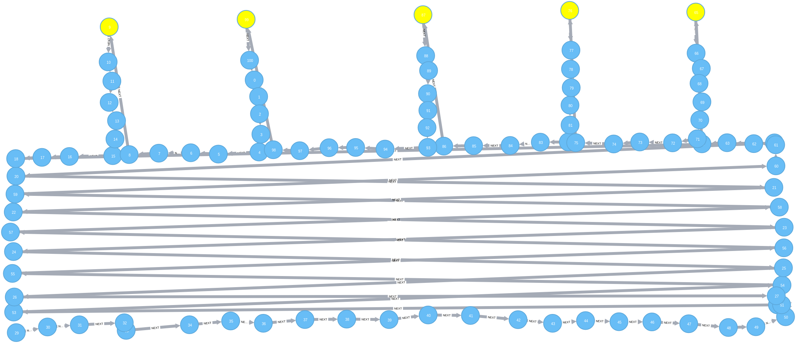

Graph Meetup Paris
Septembre 2017
Benoit Simard (@logisima)
Graph Meetup Paris
Bienvenue
Et merci d’etre venu malgré les grêves.
Sponsor
Merci a Devoteam pour la salle !

9 octobre 2017
InterActor
Du graphe aux tableaux de bord, il n’y a qu’un pas !

We need you !
Soumettez une présentation ou une idée
via meetup.com ou par email benoit@neo4j.com
Plus de 2000 Membres

45 Evènements
45 évènements depuis sa création

Septembre 2012
Happy Birthday

Agenda
RDF vs Graphe de propriété
Jésus Barrasa
45min
Efficient Graph Algorithms in Neo4j
Michael Hunger
45min